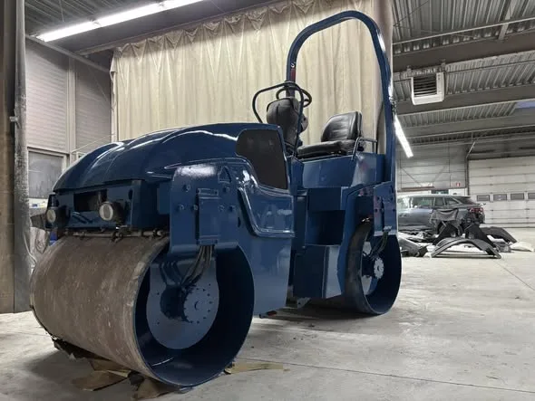

Stralen & ontroesten
Straalgrit onder hoge druk verwijdert roest en oude verflagen tot in de poriën van het materiaal, voor optimale hechting van de nieuwe laag.
Er is geen effectievere manier van ontroesten dan stralen. Onze ruime straalcabine biedt plaats aan de grootste projecten: van voertuigen en machines tot boten en industrieel materieel.
Straalgrit onder hoge druk verwijdert roest en oude verflagen tot in de poriën van het materiaal, voor optimale hechting van de nieuwe laag.
Na het stralen bouwen we een conserveringssysteem op in de juiste laagdiktes, afgestemd op de eisen van de opdracht.
Het onderwaterschip van uw boot stralen en voorbereiden voor een nieuwe grondlaag en aflak.
Chassis, containers, machineframes en landbouwwerktuigen, maar ook hekwerken of dat ene restauratieobject.
Zo werkt het
Stuur foto's via WhatsApp of kom langs, dan bekijken we samen wat er nodig is.
De juiste laagdiktes en aanpak hangen af van het materiaal en de eisen aan het eindresultaat.
Van klein onderdeel tot het grootste project, straalgrit onder hoge druk voor optimale hechting.
Direct door naar het conserveringssysteem of de spuitcabine, voor een duurzaam resultaat.
Voorbeelden


Bekijk meer projecten in Ons werk.
Veelgestelde vragen
Voertuigen, chassis, machines, containers, landbouwwerktuigen en boten. Groot of klein: we hebben een ruime straalcabine voor de grootste projecten.
Straalgrit onder hoge druk komt tot in de diepste poriën van het materiaal. Dat geeft de beste hechting voor de nieuwe laag, en is grondiger dan schuren.
Ja, bijvoorbeeld het onderwaterschip: oude laklagen en teer worden verwijderd zodat de boot klaar is voor een nieuwe grondlaag en aflak.
Vaak wel: na het stralen bouwen we direct een conserveringssysteem of verflaag op, in de juiste laagdiktes voor een duurzaam resultaat. Zie ook vrachtwagens & transport en schadeherstel.
Bel gerust voor overleg, of app foto's van het object. Dan denken wij meteen met u mee.